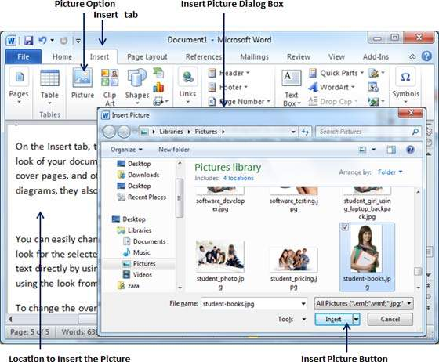
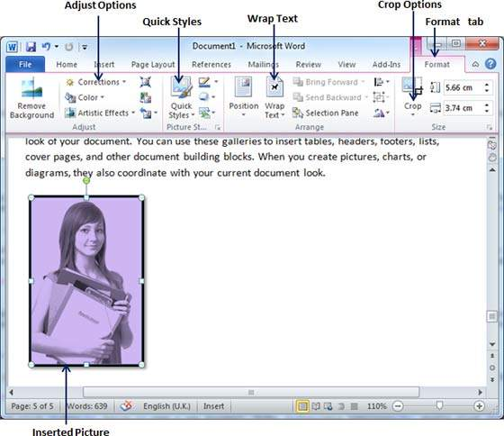
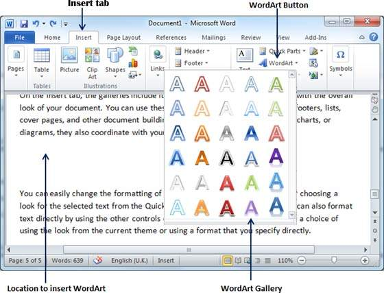
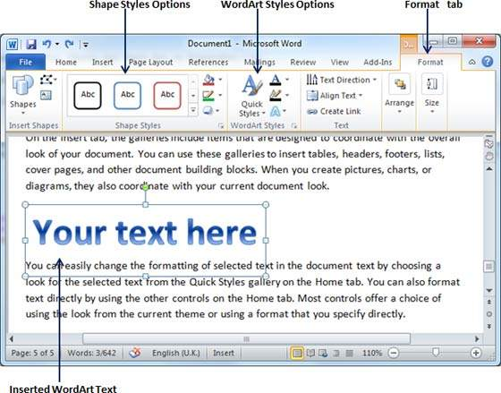

The following steps will help you add an existing picture in your word document. It is assumed that you already have a picture available on your machine before you add this picture in your Word document.
Step 1 − Click on your document where you want to add a picture.
Step 2 − Click the Insert tab and then click the Picture option available in illustrations group, which will display the Insert Picture dialog box.

Step 3 − You can select a required picture using the Insert Picture dialog box. When you will click the Insert button, selected picture will be inserted in your document. You can play with your inserted picture in different ways, like you can apply quick styles to your picture, you can resize it, or you can change its color too. To try it, just -lick your inserted image and Word will give you numerous options available under the Format tab to format your inserted graphics.

You can try yourself to insert other available graphics like Clipart, Different Shapes, Charts and SmartArt or Screenshots.
WordArt provides a way to add fancy words in your Word document. You can document your text in a variety of ways. The following steps will help you add WordArt in your document.
Step 1 − Click in your document where you want to add WordArt.
Step 2 − Click the Insert tab and then click the WordArt option available in the Text group; this will display a gallery of WordArt.

Step 3 − You can select any of the WordArt style from the displayed gallery by clicking on it. Now you can modify the inserted text as per your requirement and you can make it further beautiful by using different options available. To try it, just double-click your inserted WordArt and Word will give you numerous options available from the Format tab to format your image. Most frequently used options are Shape Styles and WordArt Styles.

You can try yourself to apply different options on the inserted WordArt by changing its shape styles, colors, WordArt Styles, etc.